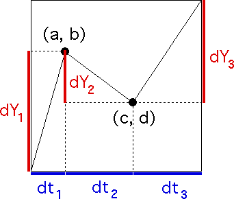

| Constructing unifractal cartoons is not difficult, but it does require one bit of care. |
| The generator starts at |
| dt1 + dt2 + dt3 = 1 (a) |
| dY1 + dY2 + dY3 = 1 (b) |
|  |
| If we also impose the unifractal scaling condition |
| |dYi| = (dti)H |
| and take into account that the generator segments should go up, then down, then up, relation (b) becomes |
| (dt1)H - (dt2)H + (dt3)H = 1 (c) |
| Finally, solving relation (a) for dt3 and substituting into (c) gives the unifractal scaling condition |
| (dt1)H - (dt2)H + (1 - dt1 - dt2)H = 1 |
| Once we specify the coarse Holder exponent H and the interval dt1, only one value of dt2 satisfies the scaling condition. |
| Moreover, the scaling condition requires |
Return to Unifractal Cartoons.